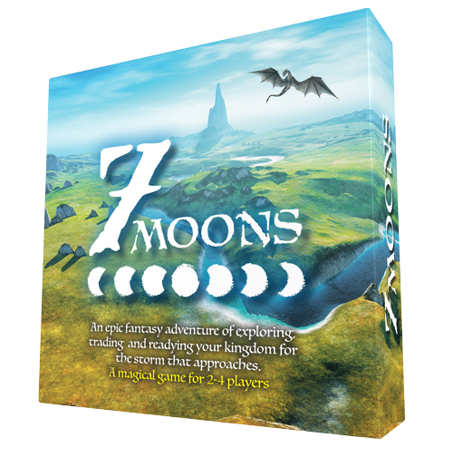
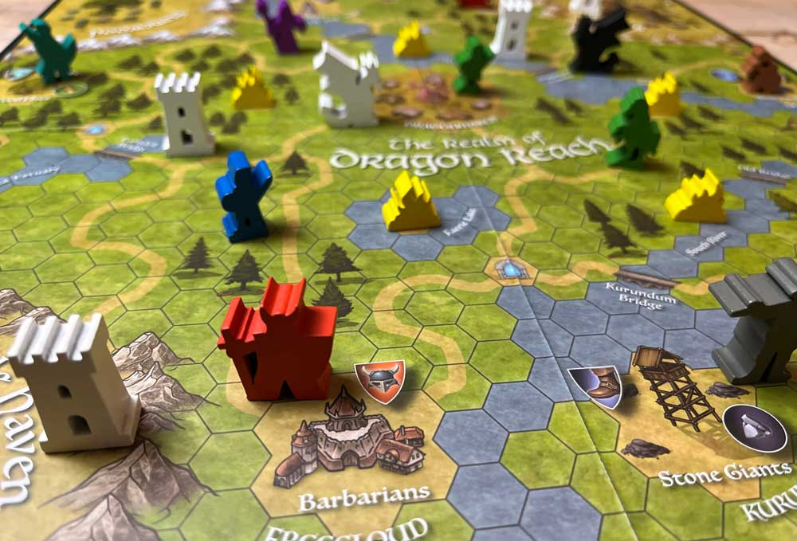
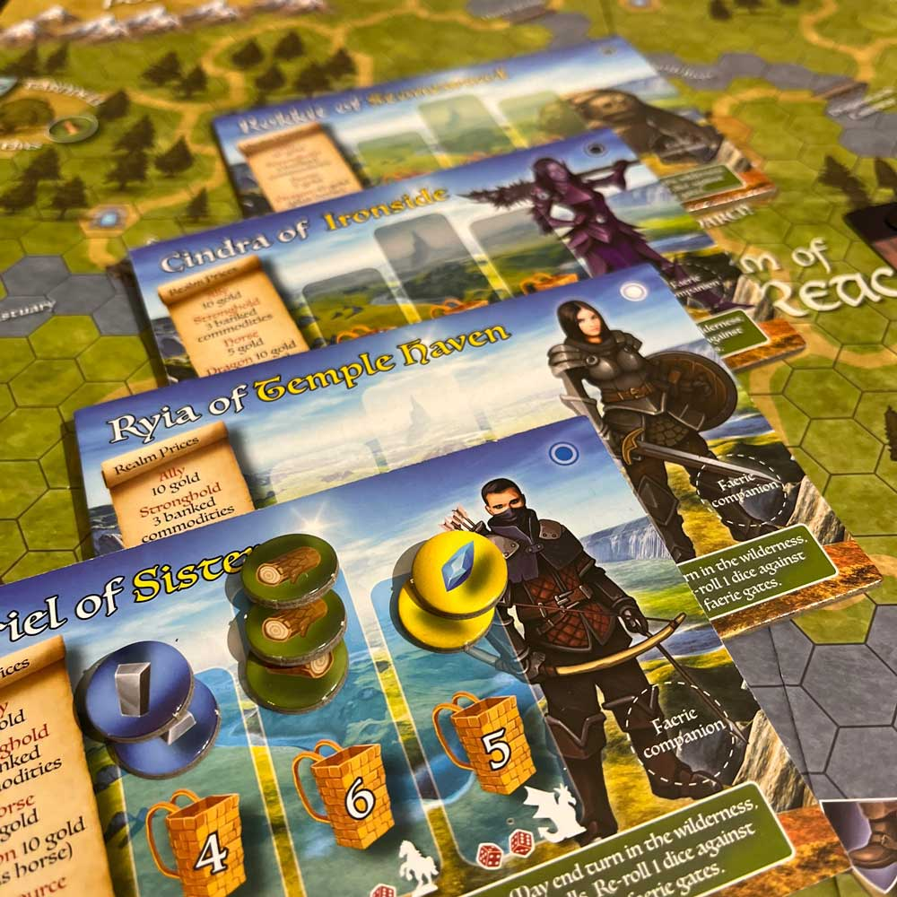

Explore the realm.
Move through the kingdom, discover where the journey takes you and decide what matters most.
An epic fantasy adventure of exploring, trading and readying your kingdom for the storm that approaches.
A magical game for 2–4 players, with an open world designed to put you at the heart of the adventure.


Travel, trade and prepare for what is coming — the world of 7 Moons is built to feel like an adventure rather than a race around a track.
The magical kingdom is woven into the game itself, giving players a sense of place as they explore and make decisions about where to go and what to do next.
Every journey is about getting your kingdom ready before the storm arrives.
7 Moons mixes exploration, trading and preparation into one connected fantasy adventure.
Move through the kingdom, discover where the journey takes you and decide what matters most.
Gather what you need and make choices that strengthen your position before the storm arrives.
The setting is part of the game, rewarding players who pay attention to the places and opportunities around them.
Everything you have done leads toward the threat hanging over the kingdom.
Bright landscapes, distant towers and a dragon overhead — the look of the game is part of its storybook adventure feel.
“Explore. Trade. Ready the kingdom.”
7 Moons is designed around the feeling of travelling through a living fantasy world while preparing for the danger on the horizon.
The aim is an adventure that feels rich and atmospheric while still being approachable enough to get to the table.
A magical game for 2–4 players.

Browse 7 Moons and the rest of the Gunpowder Studios range on Amazon or Etsy.